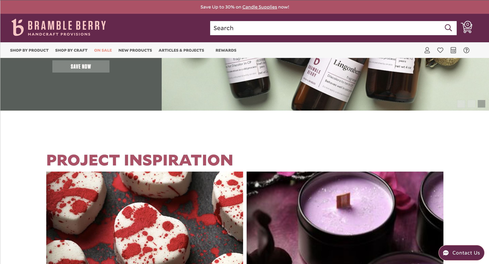
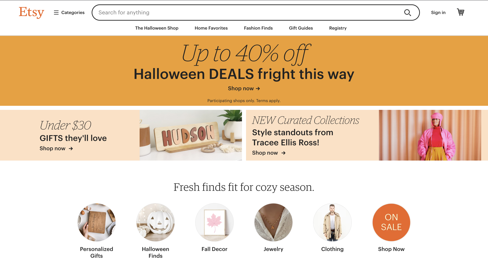
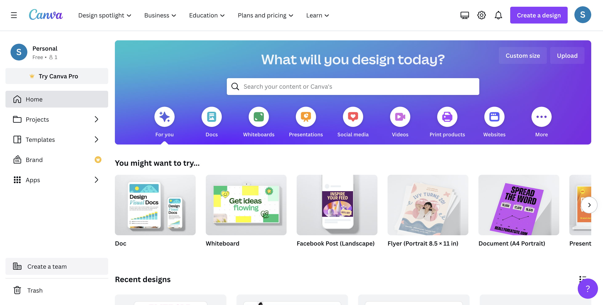

Rule of Thirds
Bramble Berry
www.brambleberry.com
The website has the rule of thirds in the sense their homepage can be split up into three sections. Each section has a different eye-catching item. The top half is the header with the nav bar and colorful colors. The middle has a rotating slideshow of their products and the bottom half of the page shows projects. There is something the eye can see on each part of the site.
PARC: Proximity
Esty
www.esty.com
The website uses the PARC: Proximity is grouping everything similar together. The webpage has a group of items at the top which are eye-catching. Then there are categories you might be interested in after that. Everything that is similar to each other like sales or categories are grouped together and not all over the place.
PARC: Alignment
Canva
www.canva.com
The website uses the center alignment for most of the page. There are smaller cards that use the alignment to the left that help keep things grouped and professional. The alignment is meant to catch the eye and even that cards at the bottom and both center and left are aligned.